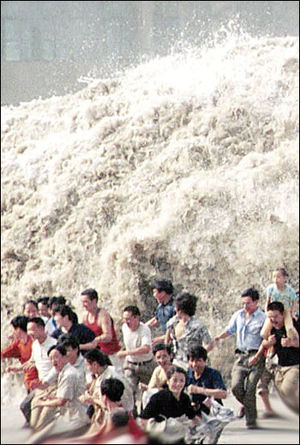
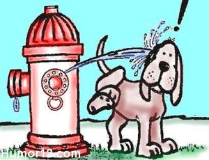
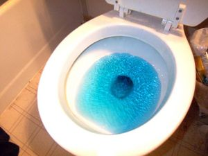
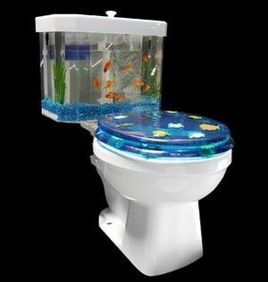

Mear
 De: La Frikipedia, la enciclopedia extremadamente seria.
De: La Frikipedia, la enciclopedia extremadamente seria.
Entre los humanos no existe estereotipo alguno sobre la postura adoptada para orinar por cualquiera de los dos sexos.
Dorada savia interna generada por los riñones de los humanos.
Se caracteriza por ser virtualmente inagotable, lo que le proporciona gran cantidad de usos aparte del de dar de beber a los tigres.
Usos Conocidos
- Lluvia dorada
- Mear encima del compañero leyenda dice que cura todos los males, incluso la gripe aviar)
- Mear en caso de picadura de medusa (poco efectivo, pero bastante humillante)
- Tónico energético de Ronbisón Crusoe (al que evidentemente se le agotaron las ideas...)
- En el film "Waterworld" Kevin Kostner introducía su propia orina en una especie de bombín de bicicleta y bombeando un poco la convertía en agua cristalina.
- En el film "Con faldas y a lo loco" Toni leBlanc suspira (pensando en la gordita rubia) la histórica frase: "No la cambiaría ni por un toro que meara whisky".
- (Fig.) El Real Madrid tiene que mear sangre para arrancar un empate a uno en casa contra el Bilbao que viene de perder 0-8 con el Barcelona en San Mamés
- Según la historia antigua un tal Fernando Alonso, a comienzos del siglo XXI meó en la boca a Schumacker, Raikonnen, y cuando se giraba hacia el tercer rival vencido preguntó: "¿Adonde vas, Montoya?", que era una frase bastante popular por esos años.
- En la pinícula española "Los Santos Inocentes" el desaparecido Francisco Rabal hacía el papel de un disminuído psíquico de avanzada edad (fale: un subnormal rústico setentón bastante más payá que pacá) que todas las mañanas el muy guarro se orinaba las manos, según él decía: "pa que no se magrieten" (las ventas de Nivea bajaron un 25% durante los meses que la peli estuvo en cartel).
Oda a la orina
Oda a la meada

|
No es necesario exhibir vuestras faenas; por favor, después de mear, tirad de la cadena. Mear da gusto, oler da pena, no seas guarro y tira de la cadena . Todo el mundo puede mear en el suelo. Sé un héroe! Mea en el techo!
Qué triste es amar sin ser amado pero más triste es mear sin haber almorzado . Da gracias a Dios, hermano, que lo que tienes en la mano, no lo tienes en el ano . En este humilde rincón, hasta el más hombre se baja el pantalón.
Oh, meada sutil ,oh, meada amena,por hondo subterráneo te vas al Mediterráneo si tiro de la cadena.
"
|

|
|
|
Clases de meadas

Si no puedes mear haz esto.
La meadita en la ducha
¿Quién no ha disfrutado alguna vez de este grato momento de relax? El agua de la ducha, el calorcito, el pisecito, uyyyyyyy....... jeje.
Puede hacerse si eres muy guarro, guarro, dejando caer el pis y notar el calorcito en los pies, o si eres sólo guarro de grado medio, mear apuntando al agujero por donde cuela el agua, así además de no manchar, practicas la puntería.
La súper meada de borracho
 Procure no aguantarse mucho la orina o podría provocar un tsunami
Las meadas son famosas por su grata sensación de satisfacción, pero ninguna (ni la de la ducha) es comparable con la súper meada de borracho. Esta está más indicada para los chicos que para las chicas, pueden hacer más escénica la situación.
Estás mareado, bebido, si apenas coordinas, sales del bar, encuentras un contenedor, un arbolito bonito, un garaje, esquina o un coche de grandes ruedas, te la sacas, abres bien las piernas adoptando una pose relajante, te arqueas y miras al cielo mientras comienzas a notar ese interminable chorro. ¡Qué sensación!
En un W.C. y si las paredes están limpias puedes aumentar el disfrute de esta meada apoyando, según meas, tu cabeza sobre la pared, soltar las manos y quedarte ahí en estado catatónico mientras ves el chorrito caer al agua o cerrando los ojos y olvidándote hasta de que meas, mucho ojo con eso último, que sino tus zapatos pueden acabar de color amarillo.
Clasificación de personas según su forma de mear
Después de intensos estudios y largas investigaciones, los doctores en urología, el ruso Urinoski y el japonés Temeotukuka, han definido el carácter del hombre según su forma de orinar y han hecho una realidad la frase "Dime como meas y te diré quien eres". Las conclusiones a las que han llegado son las siguientes:
- El Científico: Mira al suelo mientras mea y al mismo tiempo examina las burbujas y hace experimentos sobre la presión del chorro.
- El Marrano: Mea toda la parte externa del inodoro o se mea en el lavamanos si encuentra todas las tazas ocupadas.
- El tonto : Se desabrocha la bragueta, se saca una punta de la camisa y se mea en los pantalones.
- El
muy putas perezoso: Pa' no caminar mea en un tarro o lata vacia y en la noche lo tira frenta a la casa de sus vecinos
- El Pulgarcito: Dura varios minutos buscándosela entre la bragueta y al final decide bajarse por completo los pantalones para poder sacarla.
- El Fanfarrón: Se desabrocha cinco botones para sacársela cuando dos hubieran sido suficientes.
 Sigue este curso si no quieres que te pase lo que le pasó a Tobi
- El Infantil: Dirige el chorro hacia arriba y hacia abajo, intentando llegar más alto o cazar un insecto, o trata de jugar a las guerritas tratando de undir una colilla de cigarro.
- El Sinvergueza: Deja escapar un silencioso pedo, luego olfatea y mira acusadoramente al vecino.
- El Nervioso: No encuentra la bragueta, se desgarra el cinturón y se arranca los botones o la cremallera.
- El Práctico: Mea sin agarrársela y al mismo tiempo se arregla la corbata.
- El Pulcro: Se la saca con dos deditos, hace bajar la taza antes y después de orinar, luego dura 10 minutos lavándose las manos.
- El Sociable: Le gusta hablar con el de al lado mientras mea.
- El precavido: Le gusta orinar sentado en la taza por si acaso quiere salir otra cosa.
- El Goloso: Cuando orina lanza unos suspiros de alivio que cualquiera cree se está corriendo tras hacerse una paja.
- El Tímido: No puede mear cuando alguien lo mira, hace como si ya hubiera meado, se cierra la bragueta y se escabulle silenciosamente.
- El distraido: Se mea los pantalones y los zapatos, luego se va con la bragueta abierta y no se da cuenta hasta que alguien se lo advierte.
- El degenerado: Le gusta mear a su novia en vez de follársela.
Cómo orinar de color azul
 Arriesga tu vida por hacer esta gilipollez
¿Quieres sorprender a tus Amigos demostrándoles que vienes de otro mundo y quieres orinar color azul? (Ojo: No practicar el acto sexual con esto, sino tu hijo podría salir azul ).
Ingredientes
- Azul de Metileno: Este es un medicamento ayuda a tratar una condición llamada methemoglobinemia. El azul de metileno también se usa como tintura para teñir ciertas partes del cuerpo antes o durante la cirugía.
- Dos rebanadas de Pan Integral: Se usará en el experimento como elemento que llevará a nuestro cuerpo a trabajar a “Aunque usted no lo Crea”.
Preparación:
1. Tomamos una rebanada del Pan Integral y le Quitamos las Orillas.
2. Rompe la Rebanada de manera que sólo quede el centro de ésta.
3. Haz presión en la parte central de la rebanada de manera de dejar una perforación donde luego pondrás el Azul de Metileno.
4. Dobla los Bordes de la Rebanada y haz una Bolita de Pan que contenga en su Interior el Azul de Metileno
5. Aprétala fuertemente para que te asegures que el Azul de Metileno no se saldrá de la Bolita de Pan hasta que haya llegado a tus Intestinos.
¡ Estamos Listos ! ¿Y ahora? Simplemente traga la Bolita de Pan que has hecho, asegurándote de no mascarla, toma mucha agua y en un Plazo de 2 horas si sigues vivo deja en discusión tus experiencias.
Cómo convertir la orina en oxígeno en el espacio
 ...de sobrar hagua, pa`los peces
La orina es destilada para crear hagua purificada. Este agua pasa al Módulo Elektrón, donde es sometida a un proceso de electrólisis para ser descompuesta en hidrógeno y oxígeno.
El hidrógeno es expelido fuera de la estación, mientras que el oxigeno es insuflado al aire de la cabinas. El desecho sólido pasa a unas bolsas que son almacenadas en contenedores herméticos. Estos contenedores finalmente son cargados en la nave espacial que se encarga de sacar la basura fuera de la estación y expulsarla para que se desintegre al entrar en contacto con la atmósfera terrestre (nos tiran la mierda a nosotros). El baño de la siguiente imagen pertenece a la misma estación, pero es un poco mas moderno (desconozco si incluye hilo musical).
Autor(es):
- Krusher
- Vngnc
- Simoman
- Aque
- Roms
- Cibercrank
- Plasnisk
- Veni Vidi Vici
- Dark temptation
- Bryan
Frikipedia 2005-2016, Licencia
GFDL 1.2 - Extraído por FrikiLeaks